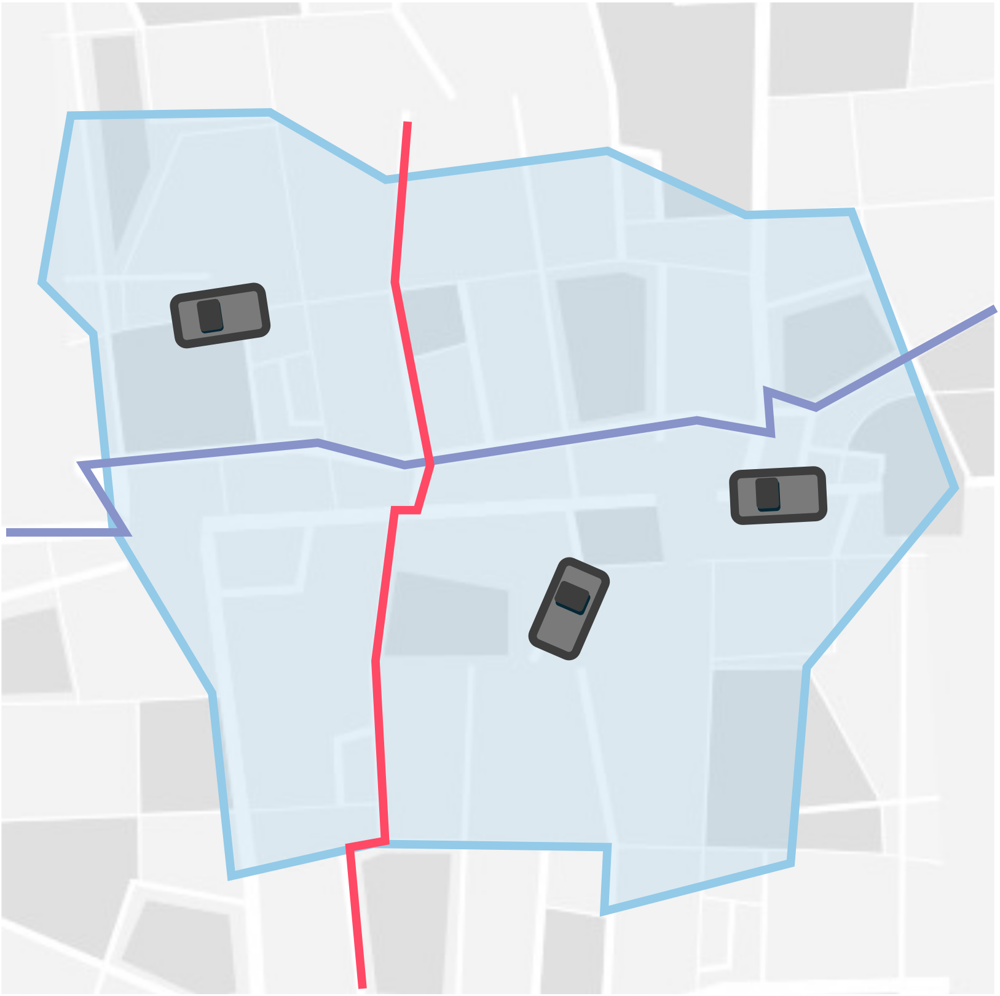
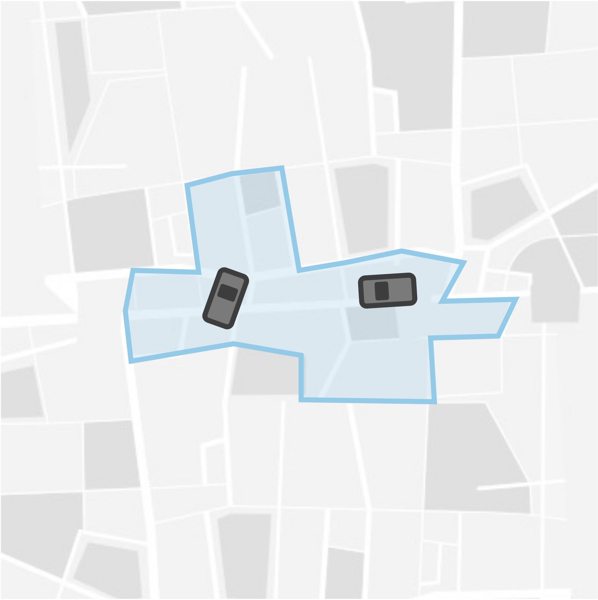

Why Choose Modal?
How we stand out from the rest.
Multimodal, not Microtransit
Microtransit is, well, micro. While microtransit focuses on direct on-demand service in small areas, it falls apart (and gets really expensive) at scale.
On the other hand, while fixed route transit is cheaper and highly efficient, it's nowhere near as convenient. You have to get to and from the fixed routes yourself - which is a major barrier to use.
Multimodal combines the best of on-demand flexibility with fixed route efficiency by integrating on-demand transit and fixed route transit (buses, rail, and more) into the same network.
Multimodal
On-demand vehicles service the first
Microtransit
Direct shuttle trips
Multimodal transportation integrates multiple forms of transit—buses, trains, ride-sharing, bikes, and more—into a seamless network. Unlike microtransit, which focuses solely on small-vehicle on-demand service, multimodal solutions provide riders with comprehensive journey planning that combines the best of fixed route reliability with on-demand flexibility. This approach maximizes coverage, minimizes costs, and provides riders with more options to get where they need to go.
🧮 Superior Optimization (No, Really)
As a research spinout from Georgia Tech, University of Michigan, and the NSF AI4OPT Institute, our optimization algorithms are peer-reviewed and published in top academic journals. We're not just claiming to be better—our competitors cite our research in their own papers. Our routing engine is built on years of academic research and validated through real-world deployments, giving you provably superior performance.
🔧 All in One
Unlike competitors who piece together separate products, Modal offers everything as a single, integrated platform. This means consistent software updates, unified user experience, and no integration headaches. Your riders, drivers, and dispatchers all work within a cohesive ecosystem designed to work together seamlessly. This integration isn't just convenient—it fundamentally improves service quality and operational efficiency.
🎓 World-Class Talent
We directly recruit from top research labs at Georgia Tech, University of Michigan, and the NSF AI Institute. Our team is small, specialized, and high-performance—many of us have worked together for years in academic research before founding Modal. 60% of our team holds PhDs in optimization, computer science, and transportation engineering. When you work with Modal, you're getting world-class expertise applied to your transit challenges.